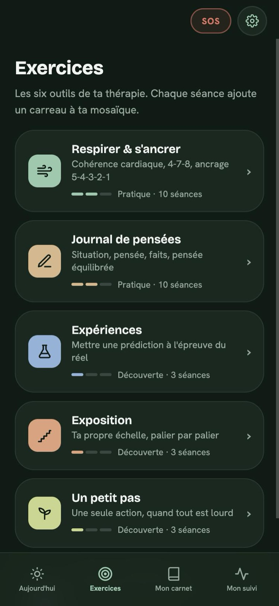
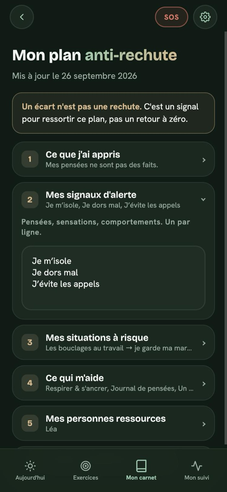

Ta thérapie continue
entre les séances.
Tes exercices de TCC à portée de main : entre deux rendez-vous avec ton psy, puis une fois la thérapie terminée. Une seule chose à faire chaque jour, rien de plus.

Quatre espaces.
Une chose à la fois.
Pas de vertige devant une liste d'outils : chaque jour, l'app te propose un seul exercice, choisi selon ce que ton psy t'a proposé ou selon ton humeur.
Aujourd'hui
Ton humeur en un geste, ta pratique du jour, et un défi de trente secondes pour repérer les pièges de pensée.
Exercices
Les six outils de ta thérapie : respirer, journal de pensées, expériences, exposition, un petit pas, valeurs et défusion.
Mon carnet
Ce que tu construis et que tu gardes : les tâches entre deux séances, ton plan anti-rechute, tes cartes, tes pensées équilibrées.
Mon suivi
Une mosaïque qui se remplit à chaque exercice, sans série à casser ni jour « raté », et la courbe de ton humeur.





Un relais entre
vos séances.
Conçue par un psychologue formé aux TCC, Serein Relais prolonge le travail fait en séance, sans rien changer à votre façon de travailler.
- En fin de séance, votre patient note les exercices proposés : « trois journaux de pensées », « palier 2 de l'exposition ».
- Entre les séances, l'app les lui propose en priorité ; ils avancent tout seuls quand il les fait.
- Avant la séance suivante, il peut vous montrer ou vous envoyer un récap : exercices faits, humeur, pensées travaillées et leurs nouvelles cotations.
- En fin de thérapie, vous remplissez ensemble son plan anti-rechute ; les tâches deviennent ses engagements de maintien.
Ce que l'app n'est pas
- Pas un dispositif médical, ni un substitut au suivi.
- Pas de compte thérapeute : rien ne vous remonte, le patient garde la main sur ce qu'il partage.
- Pas de promesse d'efficacité, pas de série à entretenir.
Tester avant la sortie
Vous êtes psy et vous voulez l'essayer avec quelques patients volontaires ? Écrivez-moi pour rejoindre la version de test.
Rejoindre la version de testLes exercices de la TCC,
tels qu'on les enseigne.
Restructuration cognitive
Le journal suit le tableau de Beck : faits pour et contre, décatastrophisation, pensée alternative, puis nouvelle cotation de la croyance et de l'émotion.
Exposition
Une échelle personnelle, centrée sur la prédiction redoutée et ce qui se passe vraiment, plutôt que sur la baisse de l'anxiété (apprentissage inhibiteur).
Activation comportementale
« Un petit pas » : l'action vient avant l'envie. Une seule action concrète, et l'occasion de remarquer le lien entre activité et humeur.
ACT
Valeurs comme directions de vie, défusion pour prendre du recul sur ses pensées : l'utilité d'une pensée plutôt que sa vérité.
Prévention de la rechute
Signaux d'alerte, situations à risque, ce qui aide, personnes ressources, seuil pour reprendre contact. Un écart n'est pas une rechute.
Sécurité
Un bouton SOS toujours visible : respiration, ancrage, plan, et appel direct du 3114 ou, en cas de danger immédiat, du 15 et du 112.
Ce que tu écris
ne regarde que toi.
Aucun compte, aucun tracker, aucune requête réseau. Tout reste sur ton téléphone, jamais transmis à nos serveurs ni à des tiers. Tu peux verrouiller l'app par Face ID ou code, et tout effacer à tout moment.
Lire la politique de confidentialité →Ce qu'on me
demande souvent.
Non, mais c'est pour cela qu'elle est conçue : prolonger un travail commencé en thérapie. Sans suivi, les exercices restent utiles, et l'app t'oriente vers un professionnel quand c'est nécessaire.
Non. Rien ne lui remonte. Si tu le souhaites, tu peux préparer un récap et le lui montrer ou le lui envoyer toi-même.
L'app reste avec toi : tes tâches deviennent des engagements de maintien, et ton plan anti-rechute est toujours là, y compris depuis le bouton SOS.
Serein propose des méditations guidées. Serein Relais est un carnet d'exercices de TCC et d'ACT, pensé pour accompagner une thérapie. Les deux sont gratuites et suivent les mêmes principes : pas de pub, pas de compte, rien ne quitte ton téléphone.
Serein Relais ne remplace pas un suivi. Si tu as des idées suicidaires, appelle le 3114, gratuit, 24h/24. En cas de danger immédiat, appelle le 15 ou le 112.